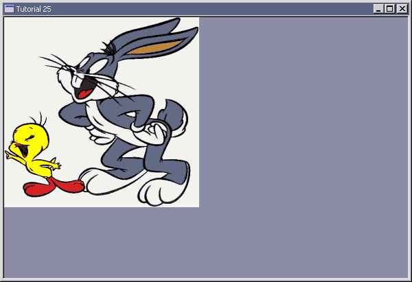

|
Tutorial 25 : Simple Bitmap
format PE GUI 4.0
entry start
include '%fasminc%\win32a.inc'
section '.data' data readable writeable
wndH dd ? ;handle for window
insH dd ? ;handle for instance
wndClsName db 'TUT_25',0
wndTitle db 'Tutorial 25',0
wndCls WNDCLASS
wndMsg MSG
bmp1H dd ? ;handle for BMP file
bmp1Ps PAINTSTRUCT
bmp1Rect RECT
dcH dd ?
dcMemH dd ?
section '.code' code readable executable
start:
invoke GetModuleHandle,0
mov [insH],eax
mov [wndCls.hInstance],eax
mov [wndCls.style],CS_HREDRAW + CS_VREDRAW
mov [wndCls.lpfnWndProc],window_procedure
mov [wndCls.lpszClassName],wndClsName
mov [wndCls.hbrBackground],COLOR_WINDOW+1
invoke LoadIcon,NULL,IDI_APPLICATION
mov [wndCls.hIcon],eax
invoke LoadCursor,NULL,IDC_ARROW
mov [wndCls.hCursor],eax
invoke RegisterClass,wndCls
invoke CreateWindowEx,\
WS_EX_CLIENTEDGE,\
wndClsName,\
wndTitle,\
WS_OVERLAPPEDWINDOW + WS_VISIBLE,\
CW_USEDEFAULT,\
CW_USEDEFAULT,\
CW_USEDEFAULT,\
CW_USEDEFAULT,\
NULL,\
NULL,\
[insH],\
NULL
mov [wndH],eax
;+---------------------------+
;| entering the message loop |
;+---------------------------+
window_message_loop_start:
invoke GetMessage,wndMsg,NULL,0,0
or eax,eax
je window_message_loop_end
invoke TranslateMessage,wndMsg
invoke DispatchMessage,wndMsg
jmp window_message_loop_start
window_message_loop_end:
invoke ExitProcess,0
;+----------------------+
;| the window procedure |
;+----------------------+
proc window_procedure,hWnd,uMsg,wParam,lParam
push ebx esi edi
cmp [uMsg],WM_CREATE
je wmCREATE
cmp [uMsg],WM_PAINT
je wmPAINT
cmp [uMsg],WM_DESTROY
je wmDESTROY
wmDEFAULT:
invoke DefWindowProc,[hWnd],[uMsg],[wParam],[lParam]
jmp wmBYE
wmCREATE:
invoke LoadBitmap,[insH],300
mov [bmp1H],eax
jmp wmBYE
wmPAINT:
invoke BeginPaint,[hWnd],bmp1Ps
mov [dcH],eax
invoke CreateCompatibleDC,[dcH]
mov [dcMemH],eax
invoke SelectObject,[dcMemH],[bmp1H]
invoke GetClientRect,[hWnd],bmp1Rect
invoke BitBlt,[dcH],0,0,[bmp1Rect.right],[bmp1Rect.bottom],[dcMemH],0,0,SRCCOPY
invoke DeleteDC,[dcMemH]
invoke EndPaint,[hWnd],bmp1Ps
jmp wmBYE
wmDESTROY:
invoke DeleteObject,[bmp1H]
invoke PostQuitMessage,0
wmBYE:
pop edi esi ebx
return
endp
section '.idata' import data readable
library KERNEL32, 'KERNEL32.DLL',\
USER32, 'USER32.DLL',\
GDI32, 'GDI32.DLL'
import KERNEL32,\
GetModuleHandle, 'GetModuleHandleA',\
FindResource, 'FindResourceA',\
LoadResource, 'LoadResource',\
LockResource, 'LockResource',\
ExitProcess, 'ExitProcess'
import USER32,\
RegisterClass, 'RegisterClassA',\
CreateWindowEx, 'CreateWindowExA',\
DefWindowProc, 'DefWindowProcA',\
LoadCursor, 'LoadCursorA',\
LoadIcon, 'LoadIconA',\
LoadBitmap, 'LoadBitmapA',\
LoadMenu, 'LoadMenuA',\
BeginPaint, 'BeginPaint',\
EndPaint, 'EndPaint',\
GetClientRect, 'GetClientRect',\
MessageBox, 'MessageBoxA',\
SendMessage, 'SendMessageA',\
GetMessage, 'GetMessageA',\
DestroyWindow, 'DestroyWindow',\
TranslateMessage, 'TranslateMessage',\
DispatchMessage, 'DispatchMessageA',\
PostQuitMessage, 'PostQuitMessage'
import GDI32,\
CreateCompatibleDC, 'CreateCompatibleDC',\
SelectObject, 'SelectObject',\
BitBlt, 'BitBlt',\
DeleteDC, 'DeleteDC',\
DeleteObject, 'DeleteObject'
section '.rsrc' resource data readable
directory RT_BITMAP, appBmp
resource appBmp,\
300,LANG_NEUTRAL,bmp1
bitmap bmp1, "tweety78.bmp"
Result :

|